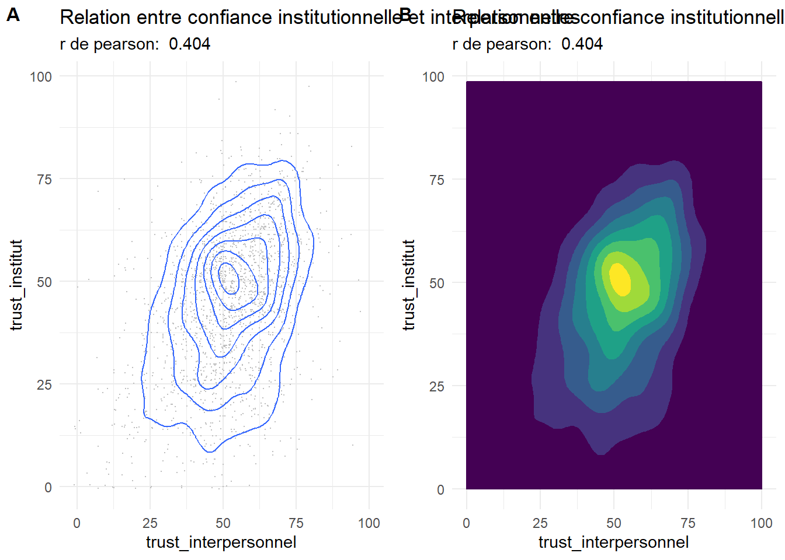

Chapitre 5 Analyse bi variée
Comme son nom l’indique, il s’agit d’examiner la relation entre deux variables et d’étudier leur distribution conjointe. On distinguera 3 situations et on examinera pour chaune les modes de représentations graphiques ainsi que les tests associés qui permette de s’assurer que la relation apparente est effective.
Deux variables quantitatives : scatterplot et corélations
deux variable qualitatives : tableau croisé et test du chi2
une variable quanti et une variable quali. Compariaons de moyennes et ANOVA
par comparer des distribution de plusieurs groupes (variables catégorielles)
par comparer des moyennes d’une variable dépendante en fonction de plusieurs variables indépendantes catégorielle
mesurer l’association entre deux variables qualitatives
5.1 Diagrammes xy - la magie des corrélations
Venons en à analyser les relations entre deux variables quantitatives.
foo<-df %>%
filter(cntry=="FR" & Year=="2018") #selection de l'echantillon
g31<- ggplot(foo, aes(x= trust_interpersonnel,y=trust_institut)) +
geom_point( size=0.1)
g31
Ce graphe est peu clair, il y a trop de points qui prennent des valeurs discrètes. Une astuce est de donner une position aléatoire pour sur disperser, on fait mieux apparaitre la densité de points. On ajoute la représentation de deux courbe d’ajustement, l’une linéraire et l’autre non linéaires.
Mais en attendant en voici un calcul élémentaire.
le calcul de la variance
\[{SS}_{xx} = \sum (x - \bar{x})^2 = \sum x^2 - \frac {(\sum x)^2}{n}\] le calcul de la covariance
\[{SS}_{xy} = \sum (x - \bar{x})(y - \bar{y}) = \sum xy - \frac {(\sum x)(\sum y)}{n}\] et la corrélation qui est le rapport de la covariance sur la racine carrée du produit des variances de x et y.
\[r = \frac {{SS}_{xy}}{\sqrt {{SS}_{xx}{SS}_{yy}}}\]
La corrélation est de l’ordre d’un peu plus de 0,40 ce qui est assez élevé mais laisse une certaine indépendance des variables. Elle désignent des objets liés mais distinct. On peut tester l’hypothèse qu’en réalité cette corrélation est nulle. Le test conduit au rejet de l’hypothèse nulle de manière très nette, compte-tenu de l’échantillon l’intervalle de confiance est compris entre 0.36 et 0.44.
#psych
r<-cor.test(foo$trust_interpersonnel, foo$trust_institut) #le test vient du package psych
r##
## Pearson's product-moment correlation
##
## data: foo$trust_interpersonnel and foo$trust_institut
## t = 18.861, df = 1821, p-value < 2.2e-16
## alternative hypothesis: true correlation is not equal to 0
## 95 percent confidence interval:
## 0.3651235 0.4419644
## sample estimates:
## cor
## 0.404257rp<-round(r$estimate,3)
rp## cor
## 0.404Améliorons le graphe On peut souhaiter ajouter une droite des moindre carrés (calculée pour chaque vague d’enquête pour évaluer la stabilité de la relation dans le temps). Les lignes sont parallèles, la corrélation ne change pas dans le temps, c’est une relation stable. Les deux formes de confiance vont dans le meme sens. On verra dans un autre chapitre comment calculer ces droites de corrélations.
library(ggExtra)
g32<-ggplot(foo, aes(x= trust_interpersonnel,y=trust_institut)) +
geom_point(position = "jitter", size=0.1, color="grey")+
geom_smooth(method="lm", se=TRUE) +
geom_smooth(method="gam",color="red") +
labs(title = "Relation entre confiance \ninstitutionnelle et interpersonnelle",
subtitle = paste("r de pearson: ",rp ),
x= "Confiance interpersonnelle",
y=" Confiance institutionnelle")
ggMarginal(g32 ,type = "density", fill = "Royalblue1", alpha=.5)Une autre façon de représenter est celle de carte de densité de probabilité.
g32<-ggplot(foo, aes(x= trust_interpersonnel,y=trust_institut)) +
geom_point(position = "jitter", size=0.1, color="grey")+geom_density2d()+
labs(title = "Relation entre confiance institutionnelle et interpersonnelles", subtitle = paste("r de pearson: ",rp ))
g33<-ggplot(foo, aes(x= trust_interpersonnel,y=trust_institut)) +
geom_density2d_filled(aes(fill = ..level.., color = ..level..),
contour_var = "density")+
labs(title = "Relation entre confiance institutionnelle et interpersonnelles", subtitle = paste("r de pearson: ",rp ))+theme(legend.position = "none")
plot_grid(g32, g33, labels = c('A', 'B'), label_size = 12)
5.2 Comparer les distributions et des moyennes
Dans notre base on a pris les données de l’Allemagne et de la France. On va comparer leur distribution. Et tant qu’à faire, puisque qu’on a deux variables, on va faire deux comparaisons : par pays et par type de confiance.
A cette fin, nous construisons un tableau de données spécifique.
#on recode en facteur la variable
foo <- df %>%
dplyr::select(cntry,trust_institut, Year,trust_interpersonnel) %>%
filter( Year=="2018") %>%
dplyr::select(-Year)%>%
drop_na() %>%
gather(variable, value, -cntry) #attention plutôt utiliser pivot_longer
head(foo)## # A tibble: 6 x 3
## cntry variable value
## <chr+lbl> <chr> <dbl>
## 1 DE [Germany] trust_institut 58.6
## 2 DE [Germany] trust_institut 65.7
## 3 DE [Germany] trust_institut 58.6
## 4 DE [Germany] trust_institut 65.7
## 5 DE [Germany] trust_institut 48.6
## 6 DE [Germany] trust_institut 37.1Pour la représentation, en plus de la représentation en terme de densité, on va choisir une méthode de violon et de boxplot. On utilise une couche de “facetting” pour éclater ainsi la distribution des deux variables selon un critère de pays.
#on peut utiliser "facet"
g20<-ggplot(foo,aes(x=value))+ geom_density(binwidth=10, fill="pink")+ facet_grid(cntry~variable)+
labs(title= "Confiance institutionnnelle", caption="ESS2002-2018",y= "frequence",x="Confiance")
g20
g21<-ggplot(foo,aes(x=variable, y=value))+
geom_violin( fill="pink") +
geom_boxplot(width=0.1)+
facet_grid(cntry~.)+
labs(title= "Confiance institutionnnelle", caption="ESS2002-2018",y= "frequence",x="Confiance")
g21
5.2.1 Comparaison de moyennes
Comparer des distributions est une étape initiale nécesséaire, mais en général on sera plutôt intéresser de comparer des moyennes. Par exemple, on souhaiterais savoir si les degrés de confiances institutionnnelle et interpersonnelles varient en France selon les situations de revenu.
Calculons d’abord ces moyennes avec la fonction group_by et summarise.
df_wave<-df %>% filter(cntry=="FR" & Year=="2018") %>%
group_by(revenu) %>%
summarise(trust_interpersonnel=mean(trust_interpersonnel, na.rm=TRUE),
trust_institut =mean(trust_institut, na.rm=TRUE)) %>%
filter(!is.na(revenu)) %>% #filtrer les valeurs manquantes
gather(variable, value, -revenu) #fichier long ( pivot longer is better)
head(df_wave)## # A tibble: 6 x 3
## revenu variable value
## <fct> <chr> <dbl>
## 1 Vie confortable trust_interpersonnel 55.6
## 2 Se débrouille avec son revenu trust_interpersonnel 51.7
## 3 Revenu insuffisant trust_interpersonnel 46.7
## 4 Revenu très insuffisant trust_interpersonnel 41.4
## 5 Vie confortable trust_institut 50.2
## 6 Se débrouille avec son revenu trust_institut 44.1Représentons ces moyennes graphiquement avec un geom_bar.
g06a<-ggplot(df_wave,aes(x=revenu,y=value, group=variable))+
geom_bar(stat="identity",aes(fill=variable), position =position_dodge())+ #dodge pour mettre les barres l'une à côté de l'autre
labs(title= "Confiance institutionnnelle", caption="ESS2002-2018",y= "frequence",x="Niveau de Confiance")+
coord_flip()
g06a
On a une solution mais pas la meilleure, on perd l’idée de variance et ce serait bien d’ajouter des barres d’intervalle de confiances , un diagramme en lignes serait plus élégant. On en profite pour corriger l’aspect des labels peu lisibles en les inclinants, et à choisir une échelle qui omettent les valeur supérieur à 70 et inférieure à 30 pour donner une vision plus respectueuses de la totalité de l’échelle qui va de 0 à 100.
Au passage on emploie à nouveau cowplot pour combiner les graphes, et ici plus précisément partager la légende des deux graphiques.
On observera que si le niveau de confiance diminue avec le revenu, la confiance interpersonnelle est plus forte, et de manière parallèle, à la confiance institutionnelle. On remarquera enfin que c’est pour les revenu les plus faibles que l’estimation est la plus imprécise ou la variance la plus grande.
df_wave2<-df %>%
filter(cntry=="FR" & Year=="2018")%>%
group_by(revenu) %>%
mutate(n=1) %>%
summarise(trust_interpersonnel_se=sd(trust_interpersonnel, na.rm=TRUE), #on calcule l'écartype des deux variables
trust_institut_se =sd(trust_institut, na.rm=TRUE),
n=sum(n),
trust_interpersonnel_se= 2*trust_interpersonnel_se/sqrt(n), # on calcule l'erreur type d'échantillonnage
trust_institut_se=2*trust_institut_se/sqrt(n)
) %>% dplyr::select(-n) %>%
filter(!is.na(revenu)) %>%
gather(variable, value, -revenu) %>% #on passe en format long
dplyr::select(-revenu,-variable)%>%
rename(se=value)
df_wave3<-cbind(df_wave,df_wave2) #on concatène les moyennes et les erreurs types
#on peut enfin produire le graphique
g06a<-ggplot(df_wave3,aes(x=revenu,y=value, group=variable))+
geom_line(stat="identity",aes(color=variable), size=1.5)+
geom_errorbar(aes(ymin=value-se, ymax=value+se, color=variable), width=.2,position=position_dodge(0))+
labs(title= "Confiance et revenu",y= "Moyenne",x=NULL)+
theme(axis.text.x = element_text( angle=45, hjust =1)) #on controle l'angle et la position horizontale du label
g06b<-ggplot(df_wave3,aes(x=revenu,y=value, group=variable))+
geom_line(stat="identity",aes(color=variable), size=1.5)+
geom_errorbar(aes(ymin=value-se, ymax=value+se, color=variable), width=.2,position=position_dodge(0))+
ylim(0,100)+
labs(title= "",y= "Moyenne",x=NULL)+
theme(axis.text.x = element_text( angle=45, hjust =1)) #on controle l'angle et la position horizontale du label
prow <- plot_grid(
g06a + theme(legend.position="none"),
g06b + theme(legend.position="none"),
align = 'vh',
labels = c("A", "B", "C"),
hjust = -1,
nrow = 1
)
# extract a legend that is laid out horizontally
legend_b <- get_legend(
g06a +
guides(color = guide_legend(nrow = 1)) +
theme(legend.position = "bottom")
)
# add the legend underneath the row we made earlier. Give it 10%
# of the height of one plot (via rel_heights).
plot_grid(prow, legend_b, ncol = 1, rel_heights = c(1, .1))
La visualisation est utile, encore faut-il qu’on soit bien certain que les variations ne soit pas le produit du hasard, des fluctuations d’échantillonnage. Si en moyenne la perception du pouvoir d’achat est associée à des moyennes de confiance décroissantes, les différences observées sont-elle significatives? Dans les représentations précédentes c’est le choix de l’échelle qui oriente l’analyse.
On a un besoin d’un test plus objectif. Celui est le très classique test d’analyse de variance (ANOVA).
Celui-çi est le test d’analyse de variance qui consiste à comparer la variance à l’intérieur des groupes ( intra), et la variance entre les moyennes des groupes (inter ou between).
On note qu’ici on introduit la méthode flextable pour présenter des tableaux au formats scientifique. L’astuce ici est d’utiliser aussi xtable.
foo<-df %>%
filter(cntry=="FR" & Year=="2018") %>%
drop_na() #selection des données
fit<-lm(trust_institut~revenu, foo) #calcul du modèle linéaire
anova(fit) #test d'analyse de variance## Analysis of Variance Table
##
## Response: trust_institut
## Df Sum Sq Mean Sq F value Pr(>F)
## revenu 3 27651 9217.1 32.052 < 2.2e-16 ***
## Residuals 1686 484846 287.6
## ---
## Signif. codes: 0 '***' 0.001 '**' 0.01 '*' 0.05 '.' 0.1 ' ' 1library(xtable) #xtable transforme en table certains type d'objet dont les résultats de l'anova
ft <- xtable_to_flextable(xtable(anova(fit)), hline.after = c(0,2)) #la fonction permet d'exploiter flextable.
ftDf | Sum Sq | Mean Sq | F value | Pr(>F) | |
revenu | 3 | 27,651.4 | 9,217.1 | 32.1 | 0.0 |
Residuals | 1,686 | 484,845.7 | 287.6 |
5.2.2 Deux variables qualitatives
L’étude de la relation éventuelle entre deux variables qualitative s’apprécie traditionnellement par une méthode de tableau croisé.
5.2.2.1 Tableau croisé
Pour calculer le tableau croisé on utilise la fonction très simple table et la fonction prop.table
t<-table(foo$revenu,foo$habitat)
t##
## Big city Suburbs Town Village Countryside
## Vie confortable 118 82 161 142 31
## Se débrouille avec son revenu 120 109 275 227 58
## Revenu insuffisant 48 38 129 88 22
## Revenu très insuffisant 9 5 18 10 0prop.table(t,2)##
## Big city Suburbs Town Village
## Vie confortable 0.40000000 0.35042735 0.27615780 0.30406852
## Se débrouille avec son revenu 0.40677966 0.46581197 0.47169811 0.48608137
## Revenu insuffisant 0.16271186 0.16239316 0.22126930 0.18843683
## Revenu très insuffisant 0.03050847 0.02136752 0.03087479 0.02141328
##
## Countryside
## Vie confortable 0.27927928
## Se débrouille avec son revenu 0.52252252
## Revenu insuffisant 0.19819820
## Revenu très insuffisant 0.00000000Mais ce n’est pas esthétique, avec la fonction proc_freq de flextable on obtient une meilleure présentation. Elle nous donne en peu de mots les effectif par cellule, les pourcentages en lignes, et en colonnes.
ft1<- proc_freq(foo, "revenu", "habitat", include.table_percent = FALSE,
include.row_percent = FALSE, include.column_total = FALSE,
include.column_percent = TRUE)
ft1habitat | |||||||
revenu | label | Big city | Suburbs | Town | Village | Countryside | Total |
Vie confortable | Frequency | 118 | 82 | 161 | 142 | 31 | 534 |
Col Pct | 40% | 35.04% | 27.62% | 30.41% | 27.93% | ||
Se débrouille avec son revenu | Frequency | 120 | 109 | 275 | 227 | 58 | 789 |
Col Pct | 40.68% | 46.58% | 47.17% | 48.61% | 52.25% | ||
Revenu insuffisant | Frequency | 48 | 38 | 129 | 88 | 22 | 325 |
Col Pct | 16.27% | 16.24% | 22.13% | 18.84% | 19.82% | ||
Revenu très insuffisant | Frequency | 9 | 5 | 18 | 10 | 0 | 42 |
Col Pct | 3.05% | 2.14% | 3.09% | 2.14% | 0% | ||
ft2<- proc_freq(foo, "revenu", "habitat", include.table_percent = FALSE,
include.row_percent = TRUE,
include.column_percent = FALSE)
ft2habitat | |||||||
revenu | label | Big city | Suburbs | Town | Village | Countryside | Total |
Vie confortable | Frequency | 118 | 82 | 161 | 142 | 31 | 534 |
Row Pct | 22.1% | 15.36% | 30.15% | 26.59% | 5.81% | ||
Se débrouille avec son revenu | Frequency | 120 | 109 | 275 | 227 | 58 | 789 |
Row Pct | 15.21% | 13.81% | 34.85% | 28.77% | 7.35% | ||
Revenu insuffisant | Frequency | 48 | 38 | 129 | 88 | 22 | 325 |
Row Pct | 14.77% | 11.69% | 39.69% | 27.08% | 6.77% | ||
Revenu très insuffisant | Frequency | 9 | 5 | 18 | 10 | 0 | 42 |
Row Pct | 21.43% | 11.9% | 42.86% | 23.81% | 0% | ||
Total | Frequency | 295 | 234 | 583 | 467 | 111 | 1690 |
5.2.2.2 le valeureux chi²
Le test du chi2 s’appuie sur une idée très simple qui de fait est un théorème : Si deux variables X et Y sont indépendantes, la fréquence de leur combinaison est le produit des fréquences marginales.
On peut donc sur cette base, calculer l’effectif attendu (expected frequency) puis le comparer à ce qu’on a observé pour chacune des cellules du tableau. On somme enfin ces écarts.
\[\chi^2 = \sum \frac {(O_{ij} - E_{ij})^2}{E_{ij}}\]
Naturellement , une même valeur de cette quantité pour un petit tableau( 2x2) n’a pas la même signification que si le tableau est grand( par ex 20x 10). On l’appréciera donc en fonction des degrés de liberté (n-1 x m-1).
Le test proprement dit consiste à examiner quelles sont les chances qu’on obtienne la valeur du chi2 calculé, pour un nombre de degré de liberté donné. Si cette probabilité est faible on rejetera l’hypothèse d’indépendance des deux variables.
Avec r la fonction chsq.test nous simplifie
chi2<-chisq.test(t)
chi2##
## Pearson's Chi-squared test
##
## data: t
## X-squared = 23.853, df = 12, p-value = 0.0213L’objet chi2 est une liste
# On isole les éléments qui nous intéresse
#library()
chi<-round(chi2$statistic,2)
p<-round(chi2$p.value,3)
#V<-cramerV(t, digit=3) ( le package n'est plus maintenu)5.2.2.3 diagramme en mosaique
Le diagramme en mosaïque détermine la largeur des barres en fonction de l’effectif de la variable en abscisse et leur hauteur en fonction de la variable en ordonnée. Les couleurs permettent de mieux comparer. On s’aperçoit ici que les plus à l’aise avec leur revenu sont proportionnellement plus nombreux dans les grandes villes, et que ceux qui se débrouille sont plus fréquents dans les campagnes.
library(ggmosaic)
g1 <- ggplot(data = foo) +
geom_mosaic(aes(x=product( revenu ,habitat), fill = revenu))+
theme(axis.text.x = element_text(angle = 45, hjust = -0.1, vjust = -0.2))+
theme(legend.position = "none")+
labs(title="Statut vaccinal \npar genre",
subtitle=paste0("chi2 =",chi, " p = ", p, " - V : ", V))+
scale_fill_brewer(palette = "RdYlGn", direction = -1)
g1
5.2.2.4 les chi2s partiels et des cartes de chaleur.
Une carte de chaleur représente une grandeur par un gradient de couleur pour chaque cellule définie par des variable x et y.
Faisons un premier essai pour représenter les effectifs, plutôt qu’avoir un tableau de nombres on va obtenir un tableau de couleurs.
L’arbre qui apparait en ligne et en colonne correspond au résultat d’une classification hiérarchique que nous développons dans le chapitre X.
library(pheatmap)
library(viridis)
table2<-as.data.frame(t) %>%
pivot_wider(names_from = Var1, values_from = Freq) %>%
column_to_rownames( var = "Var2")
pheatmap(table2 , color = rocket(10,direction =-1))
On utilise la même technique mais en représenant une grandeur différentes : les tests du chi2 partiels, pour apprécier les sous ou les sur-représentation.
chi2df<- as.data.frame(chi2$stdres)
table2<-chi2df %>%
pivot_wider(names_from = Var1, values_from = Freq) %>%
column_to_rownames( var = "Var2")
pheatmap(table2 , color = brewer.pal(n = 9, name = "RdBu"))
5.2.2.5 Les treemaps, c’est merveilleux
D’autre graphiques et des emboîtements
library(treemapify)
tree1<-df %>% mutate(n=1)%>%group_by(cntry,genre,habitat) %>% summarize(n=sum(n),mean=mean(trust_interpersonnel, na.rm=TRUE))
g10 <- ggplot(tree1, aes(area = n, fill=genre,subgroup=cntry)) +
geom_treemap() +
geom_treemap_text(aes(label=habitat),colour = "white", place = "centre",grow = FALSE)+
geom_treemap_subgroup_text(color="white",grow = FALSE)+
geom_treemap_subgroup_border()
g10